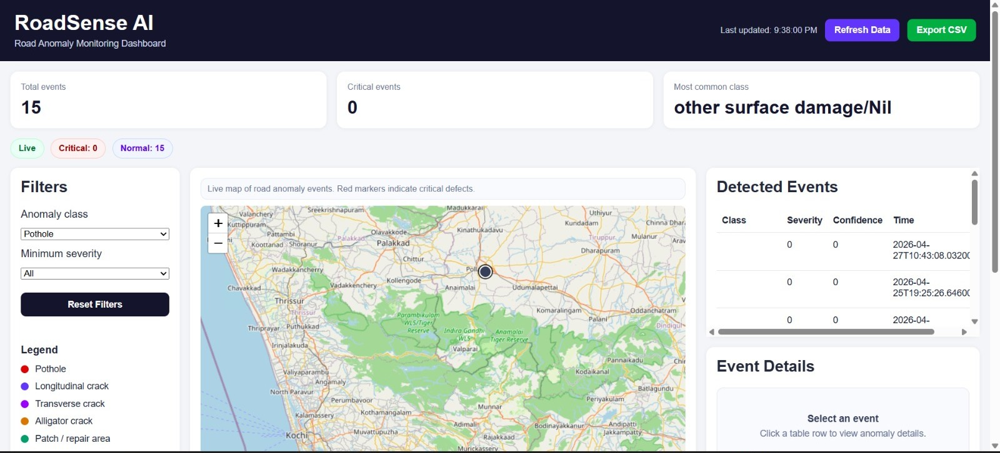

Delayed field visibility
Authorities do not get continuous road-condition data, so defects are often found after they become expensive to fix.
RoadSense AI is a professional road intelligence platform that detects potholes and surface defects in real time, geo-tags every issue, scores severity, and helps public works teams prioritize maintenance with confidence.

Road maintenance teams often rely on manual inspections, delayed complaint logs, and inconsistent field reporting. That creates slow response cycles, poor prioritization, and rising repair costs.
Authorities do not get continuous road-condition data, so defects are often found after they become expensive to fix.
Dedicated survey teams and manual audits increase cost, yet still leave coverage gaps and reporting delays.
Potholes, cracks, and surface failures increase accident risk, vehicle damage, and public dissatisfaction.
The platform converts everyday municipal vehicles into mobile inspection units. Edge AI analyzes road footage on-device, tags defects with GPS, scores severity, and sends structured insights to a centralized dashboard.
Dashcams or mounted cameras collect road visuals during normal fleet movement across the city.
On-device inference identifies potholes, cracks, and anomalies with low latency and reduced cloud dependency.
Each issue is geo-tagged, severity-scored, and sorted so maintenance teams know what to fix first.
Dashboards help agencies assign crews, track hotspots, and improve the speed and quality of repair response.
RoadSense AI is designed for municipalities, state PWD teams, contractors, and road maintenance operators that need a practical, scalable, and cost-aware inspection system.
The platform is structured to detect, classify, prioritize, and operationalize road-condition intelligence in one workflow.
Each defect is tied to its exact location for faster dispatch and stronger accountability.
Real-time inference reduces delay and supports field operations even in limited connectivity zones.
Urgent defects rise to the top so crews can focus on the roads that matter most.
Track road-quality trends, hotspots, and maintenance progress from one control view.
A short overview of RoadSense AI, including the problem, the workflow, and the intended deployment model for municipal infrastructure teams.
A clear workflow helps teams move from data capture to repair execution without extra process overhead.
RoadSense AI is suited for recurring monitoring across city roads, arterial routes, and high-traffic corridors. It complements existing maintenance planning with fresh field-level evidence.
“A practical system should do more than detect defects — it should help teams decide what to repair, where to send crews, and how to measure progress.”
Many alternatives are either too generic, too expensive, or too dependent on manual follow-up. RoadSense AI focuses on deployment practicality and maintenance value.
| Parameter | RoadSense AI | Traditional surveys | Generic complaint apps |
|---|---|---|---|
| Detection speed | Real-time on-device | Periodic and delayed | Complaint-driven only |
| Data quality | Geo-tagged and structured | Manual and inconsistent | Citizen-reported, variable |
| Deployment cost | Uses existing vehicles | High specialized cost | Low, but low precision |
| Actionability | Severity + priority output | Requires follow-up analysis | No structured prioritization |
This project profile is framed around outcomes that municipal stakeholders understand: lower inspection cost, faster action, and safer roads.
Fleet vehicles can gather road intelligence during normal operations without dedicated survey runs.
Inspect defects, hotspots, severity patterns, and maintenance priority from a single place.
Location data and severity ranking reduce time spent deciding where to send crews first.
RoadSense AI is positioned for municipal bodies, PWD agencies, contractors, and infrastructure partners that need a practical, field-ready road intelligence layer.